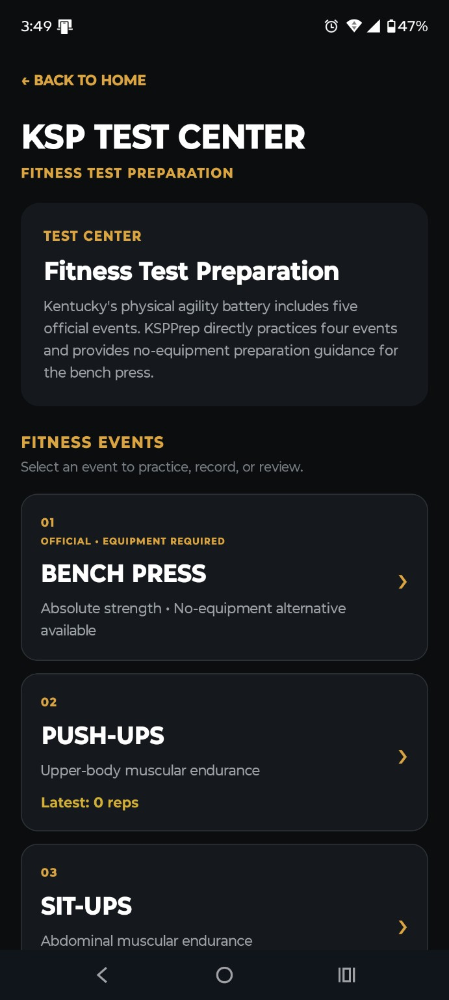
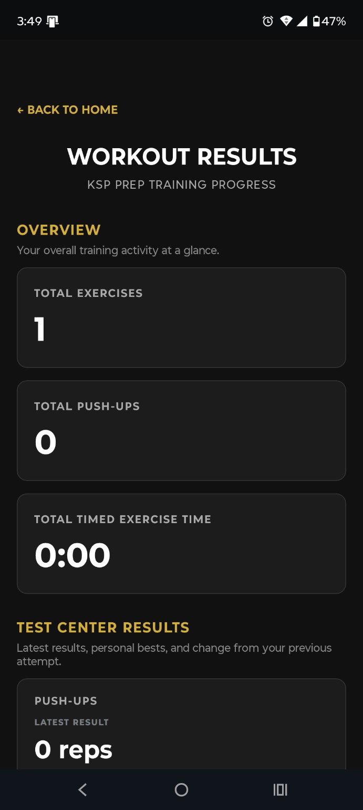
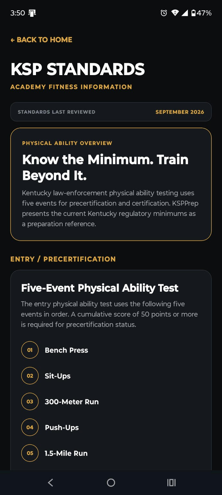

Structured Program
Follow a 12-week progression built around speed, muscular endurance, aerobic conditioning, and test-focused preparation.
A structured 12-week fitness-preparation and progress-tracking system designed to help you train with intent, test yourself, and build beyond the minimum.
KSPPrep organizes preparation into a progressive 12-week program and gives every workout a clear sequence, target, timer, recovery period, and recorded result.
From the home dashboard to your most recent result, KSPPrep keeps the training path visible and the next action clear.
Follow a 12-week progression built around speed, muscular endurance, aerobic conditioning, and test-focused preparation.
Move through preparation countdowns, active sets, timed exercises, recovery periods, and completion controls without losing your place.
Practice and record event performance, review latest results, and compare personal bests over time.
See program completion, training history, personal bests, and recent activity in one place.
Unfinished workouts are saved so supported signed-in devices can restore the workout in progress instead of forcing a restart.
Supported training results can persist locally during connectivity loss and synchronize when a connection returns.
KSPPrep turns a long-term goal into the next executable step: the current week, next workout, program progress, and quick access to testing and standards.


The workout player keeps attention on the current task while still showing exactly where you are in the session.
Timers, set progression, pause controls, save-and-exit behavior, and exact-position resume are built into the training flow.
Record attempts, review event performance, and see your latest result alongside personal-best information and recent training activity.


KSPPrep presents current Kentucky physical-ability standards as a preparation reference, then encourages users to build a margin above the minimum instead of training only to the line.
KSPPrep is independently owned. It is not an official Kentucky State Police application and is not affiliated with, endorsed by, sponsored by, or operated by the Kentucky State Police or the Commonwealth of Kentucky. Standards and agency procedures can change; users should verify current official requirements.

After the initial release is stable, KSPPrep's planned headline upgrade is a dedicated GPS Run Tracker designed for distance-based training.
KSPPrep includes dedicated controls for privacy, training-data reset, sign out, and permanent account deletion.
KSPPrep v1.0 is coming to Android. The release is being prepared for Google Play.